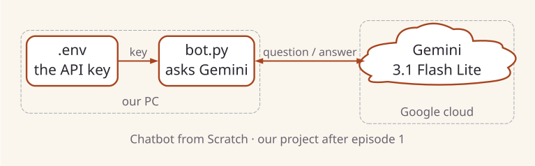
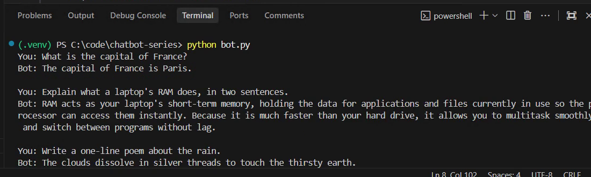
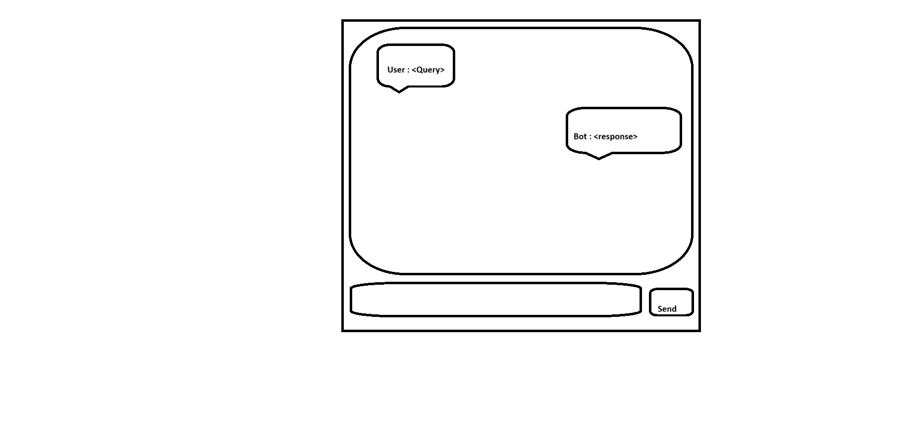
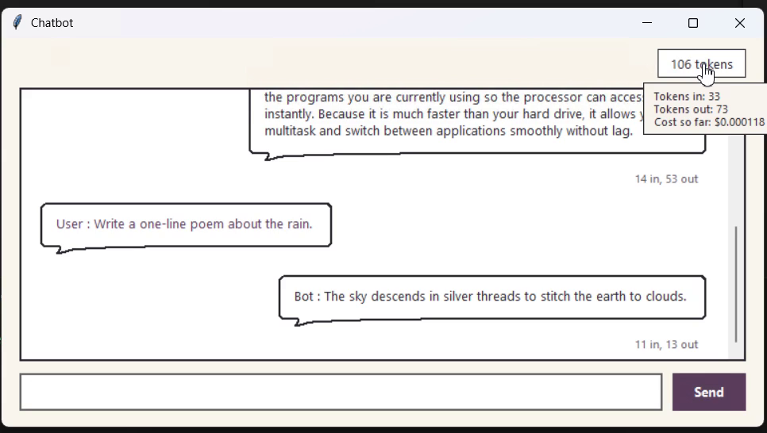
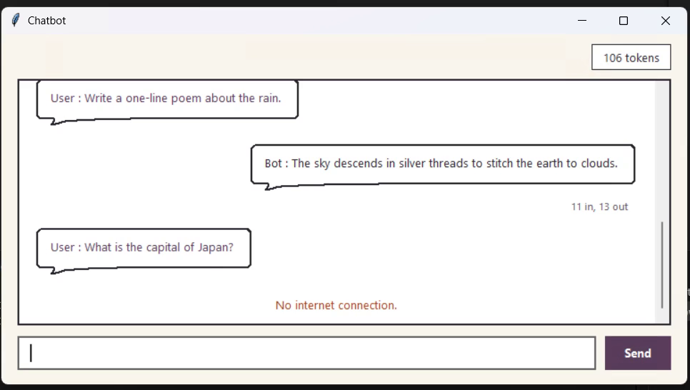
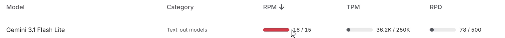

Prefer to watch? This chapter goes with Episode 2 (9:16). Open it on YouTube.
.venv. Antigravity, signed in: install Antigravity on Windows. And your own Gemini key in .env..env with GEMINI_API_KEY; the README shows the setup.One question, then it stops
At the end of Chapter 1, bot.py asked Gemini one question, with your key safely in .env.

But the question is written into the code itself. Ours asked for a one-line poem about the rain. To ask anything else, you open the code, change the line, save, and run again. Nobody chats like that.
How do I give my chatbot its own window?
We get there in two steps:
- A chat in the terminal: type a question, read the answer, type the next one.
- A window around it, built from a sketch you draw yourself.
Step 1: a chat in the terminal
Make a new file in your prompts folder: 02-terminal-chat.txt. It has the same three parts as in Chapter 1: the task, the context, and the folder layout.
Task : Let me chat with the bot in the terminal, as many questions as I like Context : - Use the virtual environment .venv in this folder. Don't create a new one. - Today the question is written inside bot.py. I want to type my question in the terminal while it runs. - After each answer, ask me for the next question. - When I type exit or bye, the chat ends. - Show my question as "You: ..." and the answer as "Bot: ...", so the chat reads like a conversation. - Put the call to Gemini in one function, ask(question), that returns the reply text and the token usage (tokens in, tokens out), so a window can use it later. - Add a function usage() that returns the totals so far in this run: tokens in, tokens out, and the cost in dollars (Gemini 3.1 Flash Lite: $0.25 per 1 million input tokens, $1.50 per 1 million output tokens). - Keep the model, the thinking setting and load_dotenv exactly as they are. - Each question is on its own: no chat history yet. Folder arch : - bot.py : the chatbot (backend) - .env : GEMINI_API_KEY - requirements.txt : the libraries used
This is the file as it ends the chapter. The "You:" and "Bot:" line came one run later; see You and Bot.
| Line in the prompt | Why it is there |
|---|---|
| Use .venv in this folder | Without it, agents often make a second environment, and your libraries end up in two places. |
| exit or bye ends the chat | A loop needs a way out that you choose. |
ask(question) | One door to Gemini. The window in Step 2 calls the same function. |
usage(), with the prices | The running total of tokens and cost, for the window's counter. |
| Keep the model and load_dotenv | The agent changes only what you asked for. |
Hand the file to the agent.
Review and implement prompts/02-terminal-chat.txt
It asks before it reads your .env file: we chose Yes, and always allow in this conversation. It also asks before each test run: choose Yes, allow this time.
When it is done, its summary says: bot.py changed, and the README too.
Click Accept all, and read bot.py yourself. At the top, the model and the thinking setting are as they were. Further down are the two new functions, ask and usage. At the bottom, a loop keeps asking.
Now run it, and ask three questions:
python bot.py
The prompt should start with (.venv). If not, run .venv\Scripts\activate first.
We asked: what is the capital of France? Paris. What does a laptop's RAM do, in two sentences? And a one-line poem about the rain.
Then bye, and the chat ended. Three questions, and not one edit to the code.
You and Bot
Our first run printed "Ask a question:" before each question, and the bare answer under it. It read like a form, not a chat.
So we added one line to the prompt, the fifth one above: show my question as "You:" and the answer as "Bot:". Then we sent a short message to the agent.
Review the new line in prompts/02-terminal-chat.txt and implement it
A prompt file can grow. Add the line, and point the agent at it.

bot.py. Now it reads like a conversation.Step 2: why a window, if the terminal works?
A terminal is for programmers. Everyone else expects a window: a place to type, a Send button, and the chat above it.
So start a second prompt, prompts/02-window.txt, and try to describe that window in words. We tried:
It gets long, and it is still vague. How tall is "not too tall"? Which corner? The agent would have to guess.
A sketch, not words
A picture says it faster. Open Paint and draw the window you want. Ours, in the order we drew it:
- A frame for the window.
- At the bottom, a typing box and a Send button.
- Above them, a big chat area.
- Inside it, your question in a bubble on the left, and the reply in a bubble on the right.
- Labels in the bubbles: User and Bot.

Save it as ui-sketch.png in your prompts folder, next to the prompt files, and open it in Antigravity. Now the agent can see it too.
The window prompt
Replace the words in 02-window.txt with a prompt that points at the picture. The picture carries the layout; the prompt carries what a picture cannot show.
Task : Create a desktop window for the chatbot, from my sketch prompts/ui-sketch.png Context : - Open the picture prompts/ui-sketch.png first and build the window to look like it: a large chat area, my question and the bot's reply in bubbles, a typing box at the bottom and a Send button. - Use the virtual environment .venv in this folder. Don't create a new one. - Use tkinter. Create ui.py; it calls ask() from bot.py. - The chat area is only for reading: I can read and copy from it, but not type into it. - In the typing box, pressing Enter sends my question, just like clicking Send. - Under each reply, one small grey line: tokens in and tokens out. - In the top right corner, a token counter like Google AI Studio's: it shows the total tokens so far; when I hover over it, it shows tokens in, tokens out and the cost so far. It gets these numbers from usage() in bot.py. - While the bot is thinking, show "Thinking..." and keep the window responsive. - If anything goes wrong, show a short plain message in the chat, in the error colour below, and keep the window open. For example: -- 429 RESOURCE_EXHAUSTED: "Too many requests for the free tier. Wait a minute and try again." -- 503 UNAVAILABLE: "Gemini is busy right now. Try again in a moment." -- no internet: "No internet connection." - The window opens at half the size of the screen. - The typing box at the bottom is 10% of the window's height; the chat area above it takes the rest. - Use the Learn AI by Building colours: window background cream #faf6ee; chat area white #ffffff; my questions in plum #5a3d5c; the bot's replies in ink #2b2730; the token line in grey #6a626e; error messages in clay #a8441f. - No menus, no system prompt and no chat history yet. Folder arch : - ui.py : the window (frontend) - bot.py : the chatbot (backend) - prompts/ : our prompts and ui-sketch.png
Sizes and colours are written out in numbers. "Not too tall" became "10% of the window's height".
Review and implement prompts/02-window.txt
It reads the sketch first. It asks before a live test of the window; allow it once.
Ours took about 12 minutes. Its summary lists what it built. Speech bubbles with tails, matching the sketch. A read-only chat, a token line under each reply, and the counter. ui.py is new; bot.py did not change. Click Accept all.
Our window
python ui.py
The window opens, laid out like the sketch. We asked the same three questions.
France went with the Enter key: "Thinking..." showed, then Paris, with "8 in, 7 out" under it. The RAM question went with the Send button. Then the poem.

Check the cost yourself: 33 input tokens at $0.25 per million, plus 73 output tokens at $1.50 per million, is $0.000118. One more test: try to type into the chat area. The text goes to the typing box, as the prompt asked.
| The prompt asked for | Check it in your window |
|---|---|
| A layout like the sketch | Chat area, bubbles left and right, typing box, Send |
| Enter sends, like the button | Ask one question each way |
| A grey token line under each reply | "8 in, 7 out" under Paris |
| A counter with a hover box | Tokens in, tokens out, cost so far |
| A read-only chat area | Typing there lands in the typing box |
| "Thinking..." while it waits | Shows, and Send is greyed out until the reply |
| Half the screen, typing box 10% | Ours opened 960 pixels wide on a 1920 screen |
When something goes wrong
What happens when Gemini cannot be reached? We switched off the internet on our test machine and asked for the capital of Japan.

The free tier has limits too. Google AI Studio shows yours on its Rate Limit page. On the day we recorded, 3.1 Flash Lite allowed 15 requests a minute, and our peak was 16, mostly from the agent's own tests.

Here are the two errors you are most likely to meet on the free tier. Our window has a plain message for each:
| Error | What it means | What our window says |
|---|---|---|
429 RESOURCE_EXHAUSTED | Too many requests for your limit | Too many requests for the free tier. Wait a minute and try again. |
503 UNAVAILABLE | Gemini's servers are busy | Gemini is busy right now. Try again in a moment. |
| No connection | Your PC cannot reach Gemini | No internet connection. |
The free tier does not always stop you at the exact number on the page. We sent 120 quick requests on the same day and got no 429. Treat the page as a guide, and let your code handle the error when it does come.
Frontend and backend
How do the two files talk? Line 4 of ui.py:
In bot.py, ask talks to Gemini, and usage adds up the tokens and the cost. The window never talks to Gemini itself.
That split has a name. ui.py is the frontend: the part you see and click. bot.py is the backend: the part that talks to Gemini. You can change one without touching the other.

Quick reference
Every command from this chapter. The two prompt files are above, in A chat in the terminal and The window prompt.
| Command | What it does | Use it when |
|---|---|---|
.venv\Scripts\activate | Switches the environment on | In every new terminal |
Review and implement prompts/02-terminal-chat.txt | Builds the terminal chat | Step 1 |
python bot.py | Runs the terminal chat; type bye to end | After Step 1 |
Review and implement prompts/02-window.txt | Builds the window from your sketch | Step 2 |
python ui.py | Opens the window | After Step 2 |
The takeaway
- For a layout, a rough sketch beats a paragraph. Hand the agent the picture, and put sizes and colours in numbers.
- Name your virtual environment in every prompt, so the agent does not make a new one.
- The window is the frontend,
bot.pythe backend. One function,ask, joins them.
Your own window, from your own sketch
The goal: a window you designed, talking to your bot.py.
The steps: draw the window you want in Paint and save it over prompts/ui-sketch.png. Send the agent “Review and implement prompts/02-window.txt”, then run python ui.py. Ask your window 3 different questions and keep an eye on the token counter.
Before you look: which of your 3 questions will cost the most? Then hover over the counter and check.
One question for you: what would you add to your window first?
References
Where each step and number on this page comes from. Everything was also checked in our own recording on 17 Nov 2026.
- Google · Google AI Studio, Rate Limit The free tier's limits per model: requests a minute, tokens a minute, requests a day. https://aistudio.google.com/rate-limit
- Google · Gemini API rate limits The free tier and its current limits. https://ai.google.dev/gemini-api/docs/rate-limits
- Python · tkinter: Python interface to Tcl/Tk The window library ui.py is built on, part of Python itself. https://docs.python.org/3/library/tkinter.html
- Learn AI by Building · chatbot-from-scratch on GitHub This chapter's finished code, prompts and sketch. https://github.com/Aditya-402/chatbot-from-scratch
- My own recording · 17 Nov 2026, Windows 11 Every picture and answer on this page is from those takes: Gemini 3.1 Flash Lite, Antigravity's agent on Gemini 3.8 Flash.
New chapters and episodes come out every week. Follow along on YouTube or the WhatsApp channel. Questions? Ask under the video on YouTube; I read every comment.